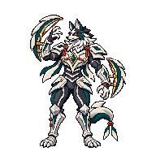

SOULMONSTERS · EXPERIMENTO DE AMOSTRAGEMGrelha medida × redução direta
Resultado: inconclusivo. O sinal não estabelece uma grelha única. Não há melhora visual consistente que justifique substituir a versão aprovada.
Os dois candidatos abaixo têm192×288 e a mesma paleta de24cores. A única diferença é a amostragem do mesmo arquivo original. Essas dimensões experimentais são maiores em altura que a célula192×192 do sprite aprovado.
A · reconstrução candidata
Passo comum5,3357px, fase X5,024 / Y2,398px; moda da região central; paleta após amostragem.B · controle na mesma resolução
Nearest-neighbor por centros, sem recuperar fase; mesma resolução192×288 e mesma paleta24.
| Verificação | Resultado |
|---|
| Melhor pico conjunto do original | Passo5,3357px; concentração espectral0,0953 |
| Candidato concorrente | Passo3,9536px; concentração0,0883 |
| Controle sintético conhecido | 9,31px → detectado9,3091px; concentração~0,98 |
| Comparação visual independente | Sem preferência consistente entreA eB |
A concentração espectral é uma medida do sinal, não probabilidade de acerto. As regiões locais do rosto, peitoral, arcos e pernas apresentam espaçamentos concorrentes. Um método que encontra bem uma grelha regular não garante recuperação única nesta arte.

Versão aprovada — contexto
Célula192×192, figura118×164. Não foi alterada. Esta imagem tem tamanho nativo diferente dos candidatos acima; mais detalhe nos candidatos maiores não comprova superioridade do método.
Relatório do teste · Medições · Aseprite dos dois candidatos · Prancha estática2×